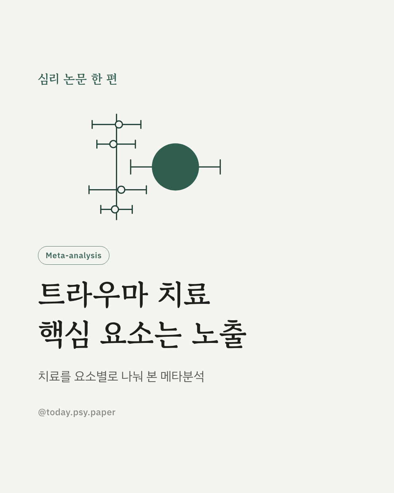
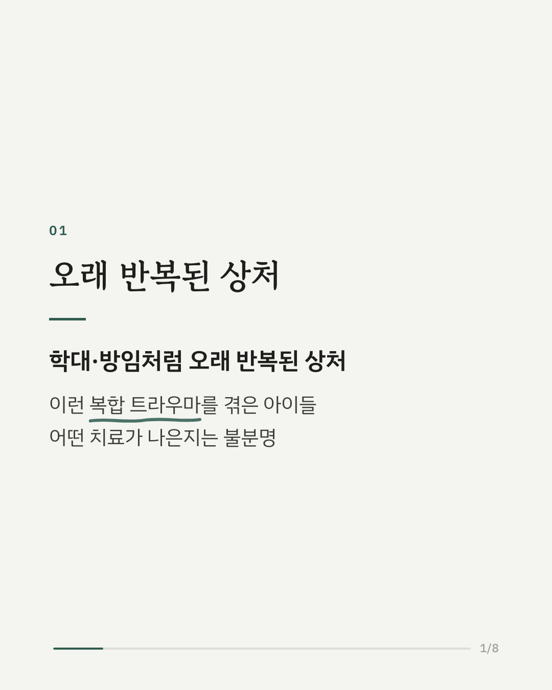
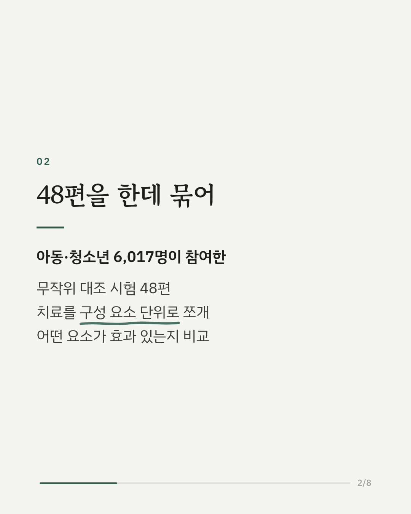
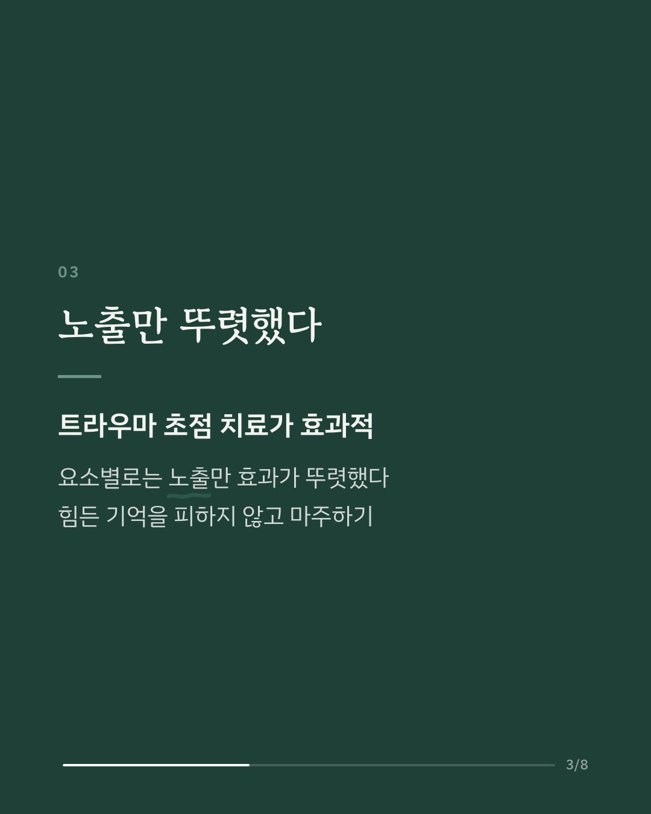
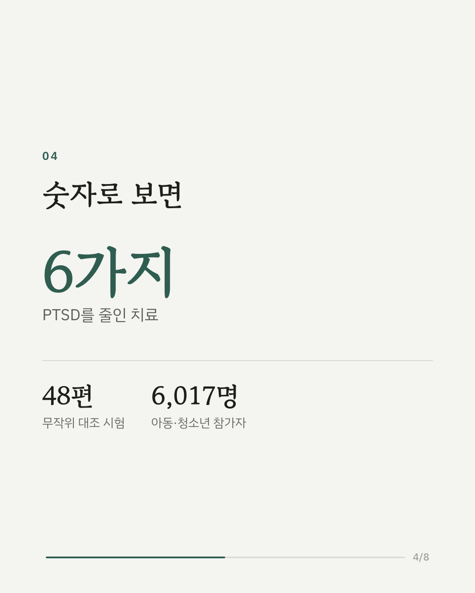
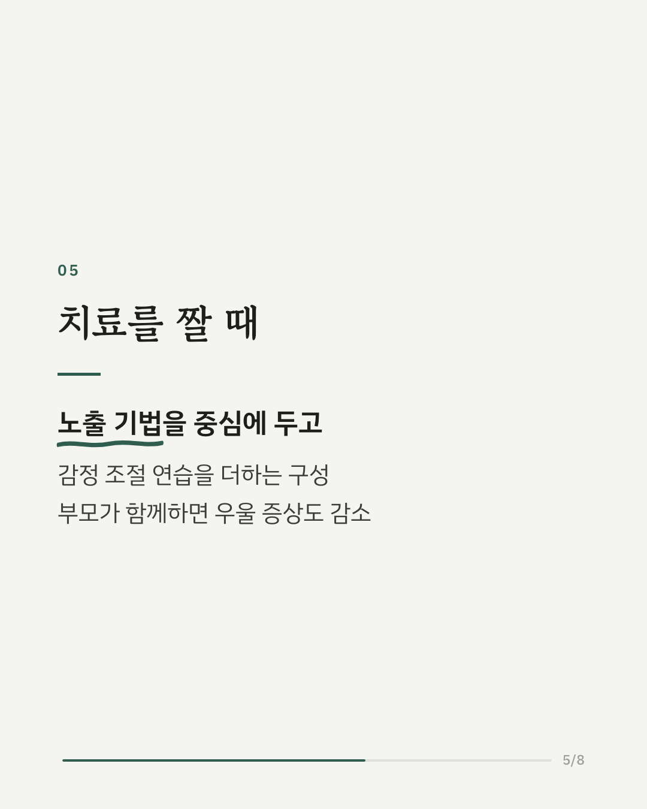
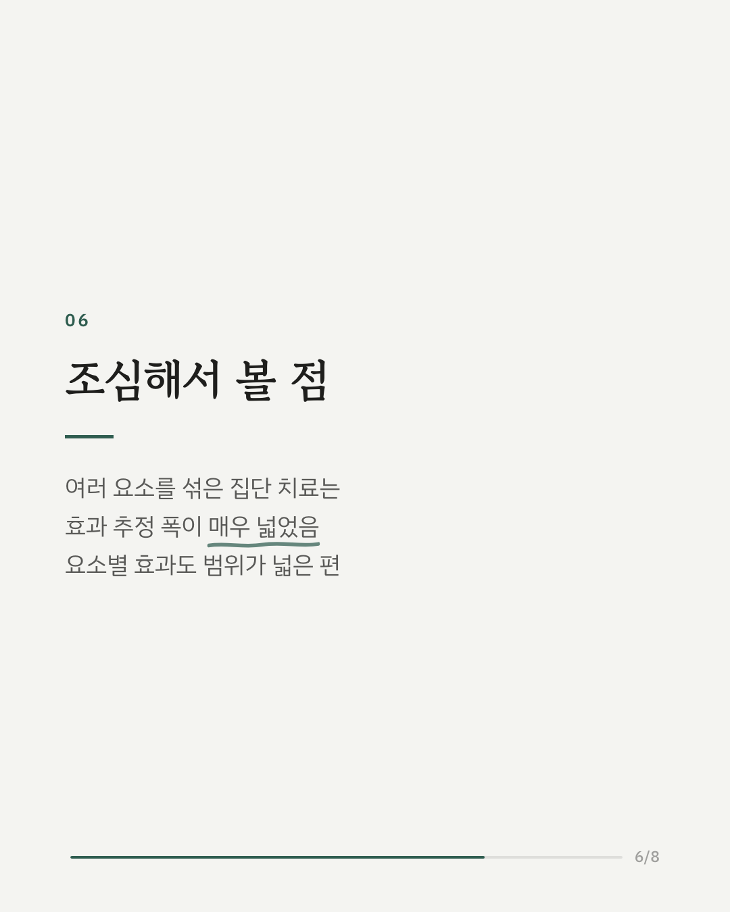
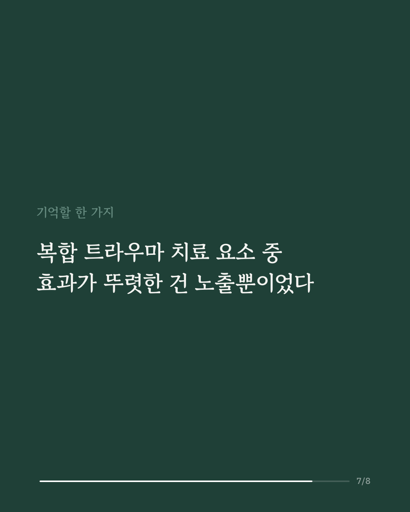
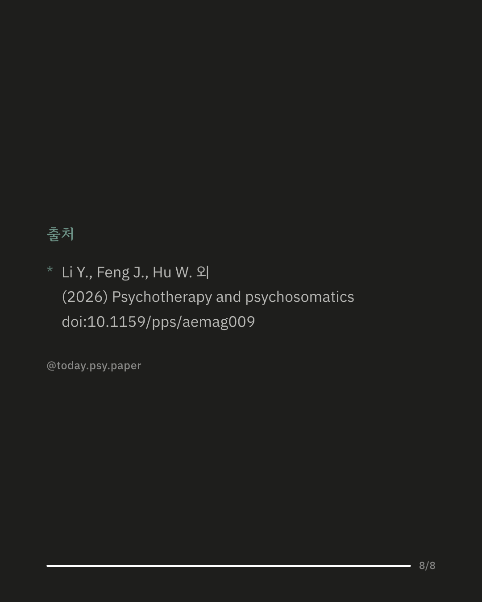

학대나 방임처럼 오래 반복된 상처를 겪은 아동·청소년은 외상 후 스트레스 장애(PTSD)와 우울·불안을 함께 겪는 경우가 많습니다. 이런 복합 트라우마에 쓰이는 심리치료는 여러 가지지만, 어떤 치료가 더 나은지, 치료 안의 어떤 요소가 효과를 내는지는 분명하지 않았습니다. 연구진은 무작위 대조 시험 48편(참가자 6,017명)을 모아 치료끼리 비교하고, 각 치료를 노출·감정 조절·부모 참여 같은 구성 요소로 나눠 분석했습니다. 트라우마 초점 인지행동치료, 안구 운동 민감소실 및 재처리(EMDR), 여러 요소를 섞은 집단 치료 등 6가지가 PTSD 증상을 줄였습니다. 요소 단위로는 노출만 뚜렷한 효과를 보였고, 그 효과 크기는 큰 편이었습니다. 연구진은 노출을 중심에 두고 감정 조절을 더하며, 가능하면 부모가 함께하는 구성이 비용 대비 효율적일 수 있다고 봤습니다. 노출과 부모 참여를 함께 넣은 구성은 우울 증상 감소와도 관련이 있었습니다. 다만 일부 치료와 요소는 효과 추정 범위가 넓어, 정확한 효과 크기는 더 확인이 필요합니다. 출처: Psychotherapy and Psychosomatics (2026), 'Dismantling Psychological Interventions for Youth with Complex Trauma: A Systematic Review and Component Network Meta-Analysis' DOI: 10.1159/pps/aemag009 #임상심리 #정신건강정보 #심리학연구 #논문리뷰 #복합트라우마 #외상후스트레스장애 #트라우마치료 #아동심리
python3 publish.py 42858309